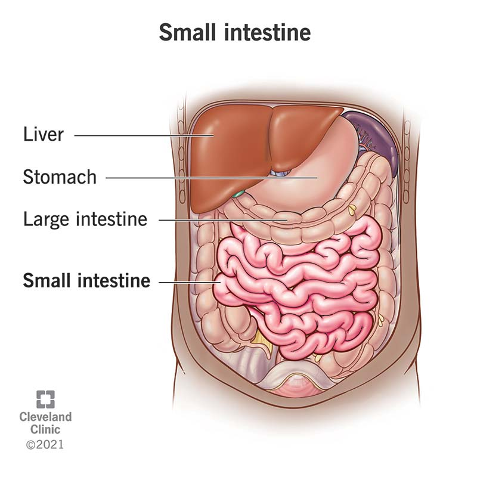

The small intestine 🧵 is a long, coiled tube in the
digestive system 🍽️ that connects the stomach 🍲 to the
large intestine 🧱. Its main job is to absorb nutrients 🍎,
vitamins, and minerals from the food we eat. The walls of
the small intestine are lined with tiny finger-like
projections called villi 🌿, which increase the surface
area for better absorption.
It also mixes food with digestive enzymes 🧪 from the
pancreas and bile from the liver 🧬 to break down proteins,
fats, and carbohydrates into forms the body can use for
energy ⚡ and growth 🌱.
-
The small intestine is divided into three parts:
- Duodenum – where most chemical digestion happens 🧪.
- Jejunum – mainly absorbs nutrients 🍎.
- Ileum – absorbs remaining nutrients and passes waste to the large intestine 🧱.
healthy ⚡💚 by ensuring nutrients from food reach the
bloodstream.
